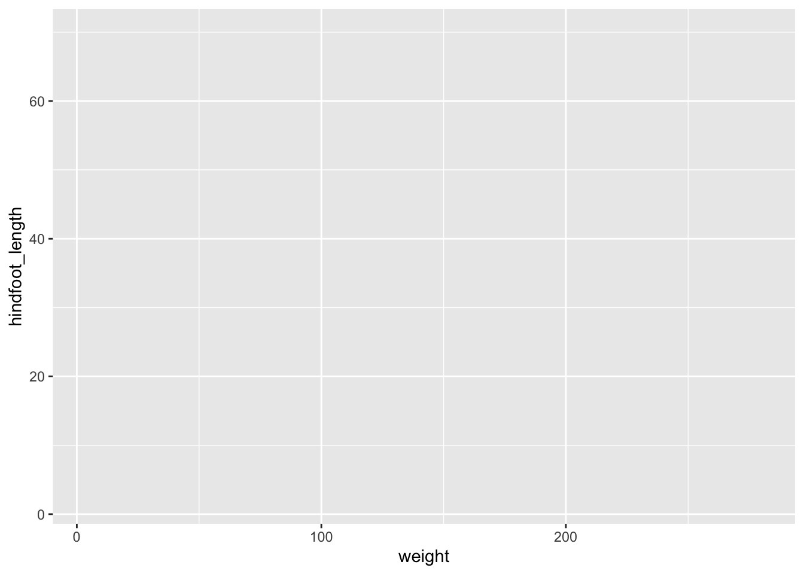
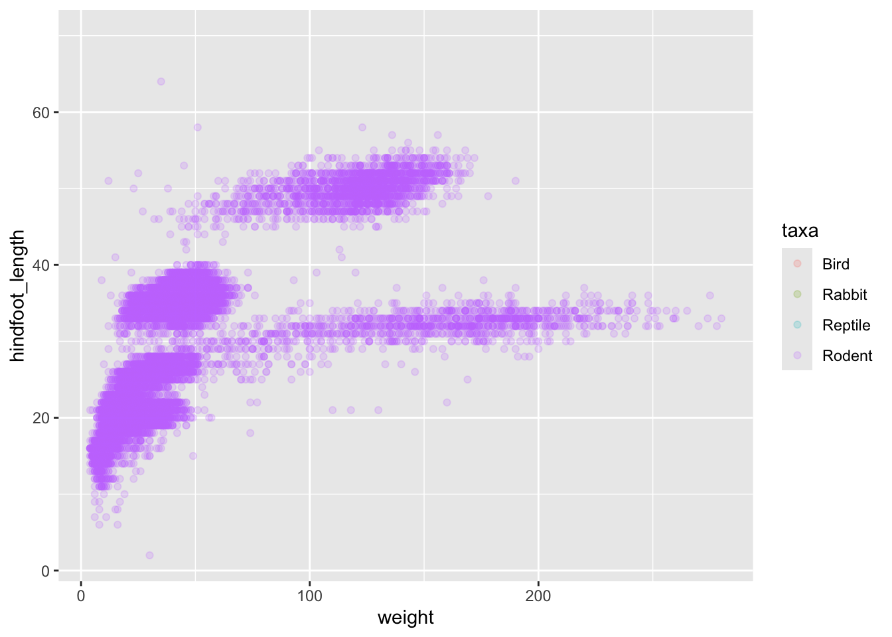
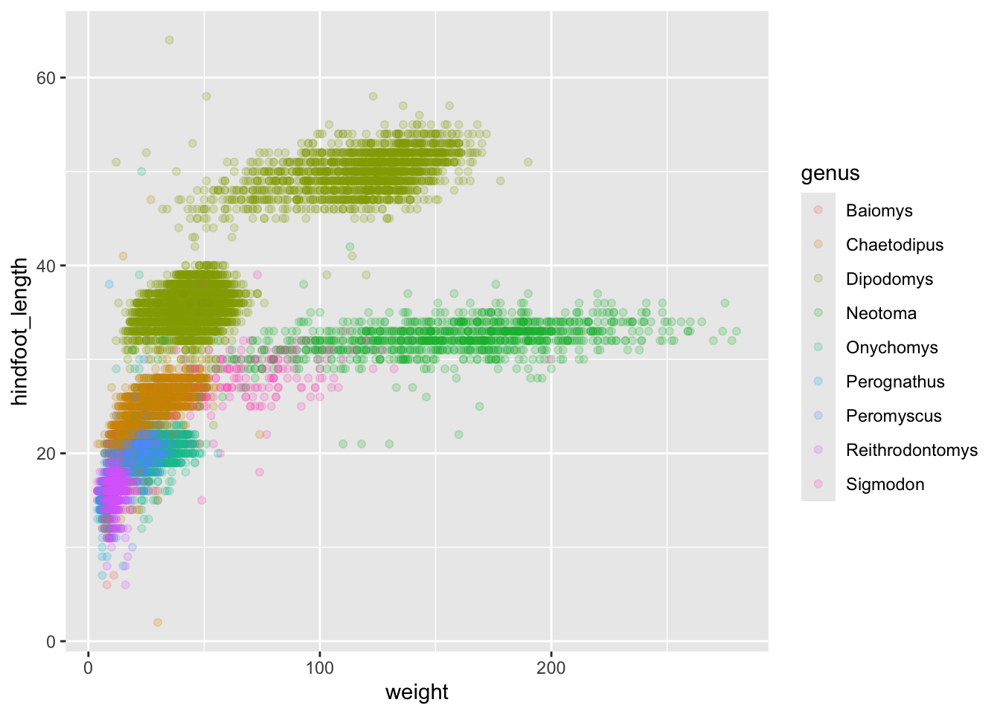
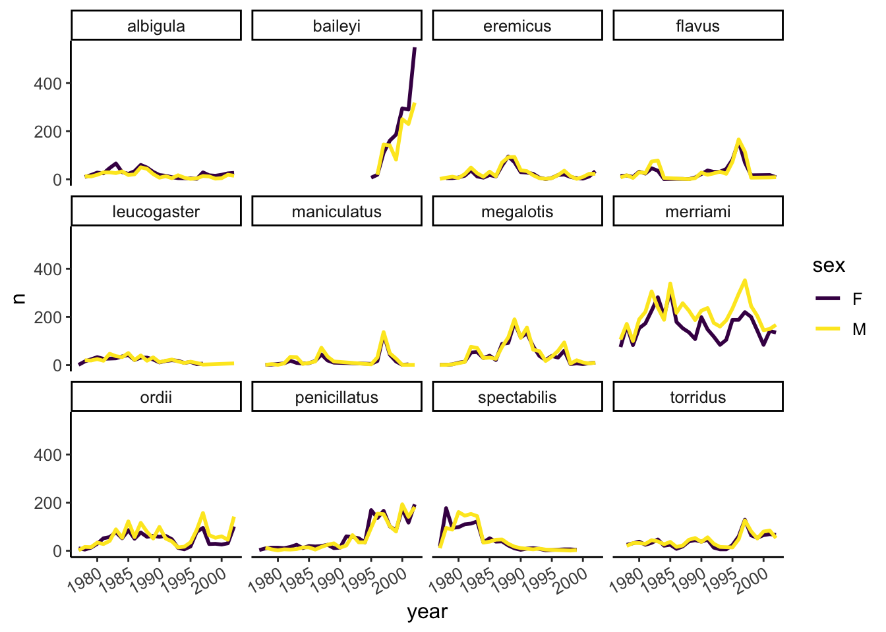

library(tidyverse)5 Data visualization with ggplot2
Parts of this lesson material were taken and modified from Data Carpentry under their CC-BY copyright license. See their lesson page for the original source.
5.1 Lesson preamble
5.1.1 Learning Objectives
- Produce scatter plots, line plots, and histograms using ggplot.
- Set universal plot settings.
- Understand how to combine dplyr and ggplot.
- Understand and apply faceting in ggplot.
5.1.2 Lesson outline
- Loading our data (10 min)
- Plotting with
ggplot2(15 mins)- Building plots iteratively (30 mins)
- Split-apply-combine… plot! (30 mins)
- Faceting (15 mins)
- Exporting (10 mins)
Now we have seen how to get our dataset in our desired shape and form (aka “tidy”, where every column is a variable, and every row is an observation), we are of course itching to actually see what the data actually looks like. Luckily, our favourite package-of-packages tidyverse got us covered – it comes with a wonderful package for generating graphics called ggplot2!
5.1.3 Loading data using relative file pathways
We’re going to install one new package today to help with loading and saving files. There are built-in functions, setwd() and getwd(), for setting and getting your working directory, but they’re fragile and depend on the way you organise your files. Setting the working directory for one code chunk in your Rmd file may not carry through to the next chunk.
The here package enables easy file referencing. It uses the top-level directory of a project to build paths to files.
install.packages("here")Use here::i_am('path/to/this/file') at the top of your R scripts to establish the root directory relative to your current file. Subsequent file paths can be made using the here function.
library(here)here() starts at /Users/meteyuksel/eeb313websitehere()[1] "/Users/meteyuksel/eeb313website"here::i_am("lectures/lec05-data-visualization.qmd")here() starts at /Users/meteyuksel/eeb313websiteThis established path remains stable even if the working directory is changed.
Now to load our portal data file using here().
# Download file if you can't find it on your computer
#download.file("https://ndownloader.figshare.com/files/2292169",
# Pass a call to here() instead of the raw file path
# here("lectures/data/portal_data.csv"))
# Read the locally-stored file into R
surveys <- read_csv(
# Pass a call to here() instead of the raw file path
here('lectures/data/portal_data.csv'))Rows: 34786 Columns: 13
── Column specification ────────────────────────────────────────────────────────
Delimiter: ","
chr (6): species_id, sex, genus, species, taxa, plot_type
dbl (7): record_id, month, day, year, plot_id, hindfoot_length, weight
ℹ Use `spec()` to retrieve the full column specification for this data.
ℹ Specify the column types or set `show_col_types = FALSE` to quiet this message.# It's good practice to inspect your data frame to check for errors
head(surveys)# A tibble: 6 × 13
record_id month day year plot_id species_id sex hindfoot_length weight
<dbl> <dbl> <dbl> <dbl> <dbl> <chr> <chr> <dbl> <dbl>
1 1 7 16 1977 2 NL M 32 NA
2 72 8 19 1977 2 NL M 31 NA
3 224 9 13 1977 2 NL <NA> NA NA
4 266 10 16 1977 2 NL <NA> NA NA
5 349 11 12 1977 2 NL <NA> NA NA
6 363 11 12 1977 2 NL <NA> NA NA
# ℹ 4 more variables: genus <chr>, species <chr>, taxa <chr>, plot_type <chr>str(surveys)spc_tbl_ [34,786 × 13] (S3: spec_tbl_df/tbl_df/tbl/data.frame)
$ record_id : num [1:34786] 1 72 224 266 349 363 435 506 588 661 ...
$ month : num [1:34786] 7 8 9 10 11 11 12 1 2 3 ...
$ day : num [1:34786] 16 19 13 16 12 12 10 8 18 11 ...
$ year : num [1:34786] 1977 1977 1977 1977 1977 ...
$ plot_id : num [1:34786] 2 2 2 2 2 2 2 2 2 2 ...
$ species_id : chr [1:34786] "NL" "NL" "NL" "NL" ...
$ sex : chr [1:34786] "M" "M" NA NA ...
$ hindfoot_length: num [1:34786] 32 31 NA NA NA NA NA NA NA NA ...
$ weight : num [1:34786] NA NA NA NA NA NA NA NA 218 NA ...
$ genus : chr [1:34786] "Neotoma" "Neotoma" "Neotoma" "Neotoma" ...
$ species : chr [1:34786] "albigula" "albigula" "albigula" "albigula" ...
$ taxa : chr [1:34786] "Rodent" "Rodent" "Rodent" "Rodent" ...
$ plot_type : chr [1:34786] "Control" "Control" "Control" "Control" ...
- attr(*, "spec")=
.. cols(
.. record_id = col_double(),
.. month = col_double(),
.. day = col_double(),
.. year = col_double(),
.. plot_id = col_double(),
.. species_id = col_character(),
.. sex = col_character(),
.. hindfoot_length = col_double(),
.. weight = col_double(),
.. genus = col_character(),
.. species = col_character(),
.. taxa = col_character(),
.. plot_type = col_character()
.. )
- attr(*, "problems")=<externalptr> This can help you check why your call to read_csv() can’t find the data file you’re looking for.
5.1.4 Challenge
How would you establish the root directory in a file “data_tidying.Rmd” in a new project directory “Group_Project” using the here package? How would you then load your data file “raw_data.csv” if it was contained in the same “Group_Project” directory along with “data_tidying.Rmd”?
Note: You may want to set “eval=FALSE” in the code chunk header for your notes so that this code chunk doesn’t run and mess up your root directory for this lecture.
5.2 Plotting with ggplot2
ggplot2 is a plotting package that makes it simple to create complex plots from data frames. The name ggplot2 comes from its inspiration, the book A Grammar of Graphics, and the main goal is to allow coders to distill complex data structure and express their desired graphical outcome in a concise manner instead of telling the computer every detail about what should happen. For example, you would say “colour my data by species” instead of “go through this data frame and plot any observations of species1 in blue, any observations of species2 in red, etc”. Thanks to this functional way of interfacing with data, only minimal changes are required if the underlying data change or if you want to try a different type of visualization. Publication-quality plots can be created with minimal amounts of adjustment and tweaking.
ggplot2 graphics are built step by step by adding new elements, or layers. Adding layers in this fashion allows for extensive flexibility and customization of plots. To build a ggplot, we need to:
1. Use the ggplot() function and bind the plot to a specific data frame using the data argument
ggplot(data = surveys)
Remember, if the arguments are provided in the right order then the names of the arguments can be omitted.
ggplot(surveys)
# You can also use the %>% operator to pass the data to ggplot
surveys %>%
ggplot()
2. Define aesthetics (aes), by selecting the columns to be plotted and the presentation variables (ex: point size, shape, colour, etc.)
ggplot(surveys, aes(x = weight, y = hindfoot_length))
3. Add geoms – geometrical objects as a graphical representation of the data in the plot (points, lines, bars). ggplot2 offers many different geoms. We will use a few common ones today, including: * geom_point() for scatter plots, dot plots, etc. * geom_line() for trend lines, time-series, etc. * geom_histogram() for histograms
To add a geom to the plot use + operator. Because we have two continuous variables (weight and hindfoot_length), let’s use geom_point() first:
ggplot(surveys, aes(x = weight, y = hindfoot_length)) +
geom_point()Warning: Removed 4048 rows containing missing values or values outside the scale range
(`geom_point()`).
Note: Notice that triangle-! warning sign above the plot? ggplot is telling you that it wasn’t able to plot all of your data. Typically this means that there are NAs in the data, or that some data points lie outside of the bounds of the axes. Can you figure what it is in this instance?
The + in the ggplot2 package is particularly useful because it allows you to modify existing ggplot objects. This means you can easily set up plot “templates” and conveniently explore different types of plots. The above plot can be generated with code like this:
# Assign plot to a variable
surveys_plot <- ggplot(surveys, aes(x = weight, y = hindfoot_length))
# Draw the plot
surveys_plot + geom_point()Warning: Removed 4048 rows containing missing values or values outside the scale range
(`geom_point()`).
Three notes:
Anything you put in the top
ggplot()call can be seen/used by any geom layers that you add, including the x and y axis variables you set up inaes(). These are essentially universal plot settings.You can specify aesthetics for a geom independently of the aesthetics defined by
ggplot(), which is particularly handy when you’re layering data from different data framesThe
+sign used to add layers must be placed at the end of each line containing a layer. If it’s used at the start of line,ggplot2will not add the new layer and R will return an error message.
5.2.1 Building plots iteratively
Building plots with ggplot is typically an iterative process. Start simply. We will define the dataset to use, lay the axes, and choose one geom, as we just did:
ggplot(surveys, aes(x = weight, y = hindfoot_length)) +
geom_point()Warning: Removed 4048 rows containing missing values or values outside the scale range
(`geom_point()`).Then, we start modifying this plot to extract more information from it. For instance, we can add the argument for transparency (alpha) to reduce overplotting:
ggplot(data = surveys, aes(x = weight, y = hindfoot_length)) +
geom_point(alpha = 0.2)Warning: Removed 4048 rows containing missing values or values outside the scale range
(`geom_point()`).Based on the hindfoot length and the weights, there appears to be 4 clusters in this data. Potentially, one of the categorical variables we have in the data could explain this pattern. Colouring the data points according to a categorical variable is an easy way to find out if there seems to be correlation. Let’s try colouring this points according to plot_type.
ggplot(surveys, aes(x = weight, y = hindfoot_length, colour = plot_type)) +
geom_point(alpha = 0.2)Warning: Removed 4048 rows containing missing values or values outside the scale range
(`geom_point()`).It seems like the type of plot the animal was captured on correlates well with some of these clusters, but there are still many that are quite mixed. Let’s try to do better! This time, the information about the data can provide some clues to which variable to look at. The plot above suggests that there might be 4 clusters, so a variable with 4 values is a good guess for what could explain the observed pattern in the scatter plot.
surveys %>%
summarize_all(n_distinct) # A tibble: 1 × 13
record_id month day year plot_id species_id sex hindfoot_length weight
<int> <int> <int> <int> <int> <int> <int> <int> <int>
1 34786 12 31 26 24 48 3 57 256
# ℹ 4 more variables: genus <int>, species <int>, taxa <int>, plot_type <int># `n_distinct` is a function that counts unique values in a set of vectorsRemember that there are still NA values here, that’s why there are 3 unique sexes although only male and female were coded in our original data set. There are four taxa so that could be a good candidate, let’s see which those are.
surveys %>%
distinct(taxa)# A tibble: 4 × 1
taxa
<chr>
1 Rodent
2 Rabbit
3 Bird
4 ReptileIt seems reasonable that these taxa contain animals different enough to have diverse weights and length of their feet. Lets use this categorical variable to colour the scatter plot.
ggplot(surveys, aes(x = weight, y = hindfoot_length, colour = taxa)) +
geom_point(alpha = 0.2)Warning: Removed 4048 rows containing missing values or values outside the scale range
(`geom_point()`).
Only rodents? That was unexpected… Let’s check what’s going on.
surveys %>%
group_by(taxa) %>%
tally()# A tibble: 4 × 2
taxa n
<chr> <int>
1 Bird 450
2 Rabbit 75
3 Reptile 14
4 Rodent 34247Definitely mostly rodents in our data set…
surveys %>%
filter( !is.na(hindfoot_length) ) %>% # control by removing `!`
group_by(taxa) %>%
tally()# A tibble: 1 × 2
taxa n
<chr> <int>
1 Rodent 31438…and it turns out that only rodents have had their hindfeet measured! Rats.
Let’s remove all records of animals without hindfoot measurements, including rodents. We’ll also remove any observations that did not include weights.
surveys_hf_wt <- surveys %>%
filter(!is.na(hindfoot_length) & !is.na(weight))
surveys_hf_wt %>%
summarize_all(n_distinct)# A tibble: 1 × 13
record_id month day year plot_id species_id sex hindfoot_length weight
<int> <int> <int> <int> <int> <int> <int> <int> <int>
1 30738 12 31 26 24 24 3 55 252
# ℹ 4 more variables: genus <int>, species <int>, taxa <int>, plot_type <int>Maybe the genus of the animals can explain what we are seeing.
ggplot(surveys_hf_wt, aes(x = weight, y = hindfoot_length, colour = genus)) +
geom_point(alpha = 0.2)
Now this looks good! There is a clear separation between different genera but also significant spread within genus. For example, in the weight of the green Neotoma observations. There are also two clearly separate clusters that are both coloured in olive green (Dipodomys). Maybe separating the observations into different species would be better?
ggplot(surveys_hf_wt, aes(x = weight, y = hindfoot_length, colour = species)) +
geom_point(alpha = 0.2)Great! Together with the genus plot, this definitely seems to explain most of the variation we see in the hindfoot length and weight measurements. It is still a bit messy as it appears like we have around five clusters of data points but there are 21 species in the legend.
surveys %>%
filter(!is.na(hindfoot_length) & !is.na(weight)) %>%
group_by(species) %>%
tally() %>%
arrange(desc(n))# A tibble: 21 × 2
species n
<chr> <int>
1 merriami 9739
2 penicillatus 2978
3 baileyi 2808
4 ordii 2793
5 megalotis 2429
6 torridus 2085
7 spectabilis 2026
8 flavus 1471
9 eremicus 1200
10 albigula 1046
# ℹ 11 more rowsThere is a big drop from 838 to 159, let’s include only those with more than 800 observations.
surveys_abun_species <- surveys %>%
filter(!is.na(hindfoot_length) & !is.na(weight)) %>%
group_by(species) %>%
mutate(n = n()) %>% # add count value to each row
filter(n > 800) %>%
select(-n)
surveys_abun_species %>%
# Remember, print limits lines displayed when knitted
print(10)# A
# tibble:
# 30,320
# × 13
# Groups:
# species
# [12]
# ℹ 30,310
# more
# rows
# ℹ 13
# more
# variables:
# record_id <dbl>, …Still has almost 31k observations, so only ~3k observations were removed.
surveys_abun_species %>%
ggplot(aes(x = weight, y = hindfoot_length, colour = species)) +
geom_point(alpha = 0.2)The plot is now cleaner; there are fewer species and so fewer colours and the clusters are more distinct.
5.2.2 Challenge
Create a scatter plot of hindfoot_length against species with the weight data displayed using colours. If you’re unsure of which variable to put on which axis, Y variables are generally “against” X variables. Also, continuous variables are generally plotted on the Y axis.
Do you notice any potential issues with this plot given the sheer number of observations we know exist in the data?
(This is further illustrating the iterative nature of constructing plots)
5.3 Split-apply-combine… plot!
In this section, we will learn how to work with dplyr and ggplot together. Aided by the pipes (%>%), we can create a powerful data exploration workflow using these two packages.
Let’s calculate number of counts per year for each species. First, we need to group the data and count records within each group:
surveys_abun_species %>%
group_by(year, species) %>%
tally() %>%
arrange(desc(n)) # Adding arrange just to compare with histogram# A tibble: 275 × 3
# Groups: year [26]
year species n
<dbl> <chr> <int>
1 2002 baileyi 868
2 1985 merriami 653
3 1997 merriami 572
4 2000 baileyi 545
5 1982 merriami 532
6 2001 baileyi 522
7 1983 merriami 521
8 1996 merriami 484
9 1998 merriami 447
10 1990 merriami 425
# ℹ 265 more rowsWe could assign this table to a variable, and then pass that variable to ggplot().
yearly_counts <- surveys_abun_species %>%
group_by(year, species) %>%
tally() %>%
arrange(desc(n))
ggplot(yearly_counts, aes(x = n)) +
geom_histogram()Remember that a histogram plots the number of observations based on a variable, so you only need to specify the x-axis in the ggplot() call. Also, that a histogram’s bin size can really change what you might understand about the data. The histogram geom has a bins argument that allows you to specify the number of bins and a binwidth argument that allows you to specify the size of the bins.
ggplot(yearly_counts, aes(x = n)) +
geom_histogram(bins=10)Creating an intermediate variable would be preferable for time consuming calculations, because you would not want to do that operation every time you change the plot aesthetics.
If it is not a time consuming calculation or you would like the flexibility of changing the data summary and the plotting options in the same code chunk, you can pipe the output of your split-apply-combine operation to the plotting command:
surveys_abun_species %>%
group_by(year, species) %>%
tally() %>%
ggplot(aes(x = n)) +
geom_histogram()
We can perform a quick check that the plot corresponds to the table by colouring the histogram by species:
surveys_abun_species %>%
group_by(year, species) %>%
tally() %>%
# We are using "fill" here instead of "colour"
ggplot(aes(x = n, fill = species)) +
geom_histogram()Note: Here we are using fill to assign colours to species rather than colour. In general colour refers to the outline of points/bars or whatever it is you are plotting and fill refers to the colour that goes inside the point or bar. If you are confused, try switching out fill for colour to see what looks best!
Let’s explore how the number of each genus varies over time. Longitudinal data can be visualized as a line plot with years on the x axis and counts on the y axis:
surveys_abun_species %>%
group_by(year, species) %>%
tally() %>%
ggplot(aes(x = year, y = n)) +
geom_line()Unfortunately, this does not work because we plotted data for all the species together as one line. We need to tell ggplot to draw a line for each species by modifying the aesthetic function to include group = species:
surveys_abun_species %>%
group_by(year, species) %>%
tally() %>%
ggplot(aes(x = year, y = n, group = species)) +
geom_line()We will be able to distinguish species in the plot if we add colours (using colour also automatically groups the data):
surveys_abun_species %>%
group_by(year, species) %>%
tally() %>%
# `colour` groups automatically
ggplot(aes(x = year, y = n, colour = species)) +
geom_line() 5.4 Faceting
ggplot has a special technique called faceting that allows the user to split one plot into multiple subplots based on a variable included in the dataset. This allows us to examine the trends associated with each grouping variable more closely. We will use it to make a time series plot for each species:
surveys_abun_species %>%
group_by(year, species) %>%
tally() %>%
ggplot(aes(x = year, y = n)) +
geom_line() +
facet_wrap(~species)
Now we would like to split the line in each plot by the sex of each individual measured. To do that we need to make counts in the data frame after grouping by year, species, and sex:
surveys_abun_species %>%
group_by(year, species, sex) %>%
tally()# A tibble: 575 × 4
# Groups: year, species [275]
year species sex n
<dbl> <chr> <chr> <int>
1 1977 eremicus M 2
2 1977 flavus F 14
3 1977 flavus M 8
4 1977 leucogaster F 1
5 1977 leucogaster <NA> 1
6 1977 megalotis F 1
7 1977 megalotis M 1
8 1977 merriami F 75
9 1977 merriami M 106
10 1977 ordii F 10
# ℹ 565 more rowsWe can reflect this grouping by sex in the faceted plot by splitting further with colour (within a single plot):
surveys_abun_species %>%
group_by(year, species, sex) %>%
tally() %>%
ggplot(aes(x = year, y = n, colour = sex)) +
geom_line() +
facet_wrap(~species)There are several observations where sex was not recorded. Let’s filter out those values.
surveys_abun_species %>%
filter(!is.na(sex)) %>%
group_by(year, species, sex) %>%
tally() %>%
ggplot(aes(x = year, y = n, color = sex)) +
geom_line() +
facet_wrap(~species)It is possible to specify exactly which colors1 to use and to change the thickness of the lines to make the them easier to distinguish.
surveys_abun_species %>%
filter(!is.na(sex)) %>%
group_by(year, species, sex) %>%
tally() %>%
ggplot(aes(x = year, y = n, colour = sex)) +
geom_line(size = 1) +
scale_colour_manual(values = c("black", "orange")) +
facet_wrap(~species) Warning: Using `size` aesthetic for lines was deprecated in ggplot2 3.4.0.
ℹ Please use `linewidth` instead.Not sure what colours would look good on your plot? The R Community got you covered! Check out these awesome color palettes where nice-looking color combos come predefined. We especially recommend the viridis color palettes. These palettes are not only pretty, they are specifically designed to be easier to read by those with colourblindness.
Lastly, let’s change the x labels so that they don’t overlap, and remove the grey background to increase contrast with the lines. To customize the non-data components of the plot, we will pass some theme statements2 to ggplot.
surveys_abun_species %>%
filter(!is.na(sex)) %>%
group_by(year, species, sex) %>%
tally() %>%
ggplot(aes(x = year, y = n, color = sex)) +
geom_line(size = 1) +
scale_colour_viridis_d() +
facet_wrap(~species) +
theme_classic() +
theme(text = element_text(size = 12),
axis.text.x = element_text(angle = 30, hjust = 1))
There are other popular theme options, such as theme_bw().
Our plot looks pretty polished now! It would be difficult to share with other, however, given the lack of information provided on the Y axis. Let’s add some meaningful axis labels.
surveys_abun_species %>%
filter(!is.na(sex)) %>%
group_by(year, species, sex) %>%
tally() %>%
ggplot(aes(x = year, y = n, color = sex)) +
geom_line(size = 1) +
scale_colour_viridis_d() +
facet_wrap(~species) +
theme_classic() +
theme(text = element_text(size = 12),
axis.text.x = element_text(angle = 30, hjust = 1)) +
labs(title = "Rodent abundance over time",
x = "Year",
y = "Number observed",
colour = "Sex")5.4.1 Challenge
Use the filtered data frame (surveys_abun_species) for part 2.
1. Remember the histogram coloured according to each species? Starting from that code, how could we separate each species into its own subplot? Hint: look in the aplit-apply-comine section
2.a. Create a plot that shows the average weight over years. Which year was the average weight of all animals the highest?
2.b. Iterate on the plot so it shows differences among species of their average weight over time. Is the yearly trend the same for all species?
5.5 Export plots
Let’s save our polished faceted plot. We will assign the entire plot to a new object.
polished_plot <- surveys_abun_species %>%
filter(!is.na(sex)) %>%
group_by(year, species, sex) %>%
tally() %>%
ggplot(aes(x = year, y = n, color = sex)) +
geom_line(size = 1) +
scale_colour_viridis_d() +
facet_wrap(~species) +
theme_classic() +
theme(text = element_text(size = 12),
axis.text.x = element_text(angle = 30, hjust = 1)) +
labs(title = "Rodent abundance over time",
x = "Year",
y = "Number observed",
colour = "Sex")If we don’t already have a figures directory to save our plot in, we can create one in R.
# Reminding ourselves where we are
here()[1] "/Users/meteyuksel/eeb313website"dir.create( here("lectures/figures") )Warning in dir.create(here("lectures/figures")):
'/Users/meteyuksel/eeb313website/lectures/figures' already existsWe can use a conditional expression with if() to create the directory only if it doesn’t already exist. The condition is inside the brackets “()” and the action to take if that’s true is in the curly braces “{}”.
if( !dir.exists("lectures/figures")) {
dir.create("lectures/figures")
}Warning in dir.create("lectures/figures"): cannot create dir
'lectures/figures', reason 'No such file or directory'With this, we can use ggsave() to save our plot. The first argument is a path to the filename we want to use, including the file extension you want. You can use .png, .jpg, .pdf, .tiff, and others. You’ll need to specify the path relative to the current working directory, so we’ll use here() to ensure the new file ends up where we expect.
The next argument is the name of the plot object in our environment that we want to save.
We then have optional arguments such as the width and height of the image to be saved. You can also specify the units for the width and height, as “in”, “cm”, “mm”, or “px”.
ggsave( here("lectures/figures/survey_yearly_abundance.png"),
polished_plot, width = 8, height = 6, units = "in" )5.5.1 Challenge
Save the polished plot as a .jpg that’s 300 by 250 pixels inside a directory called “figures”.